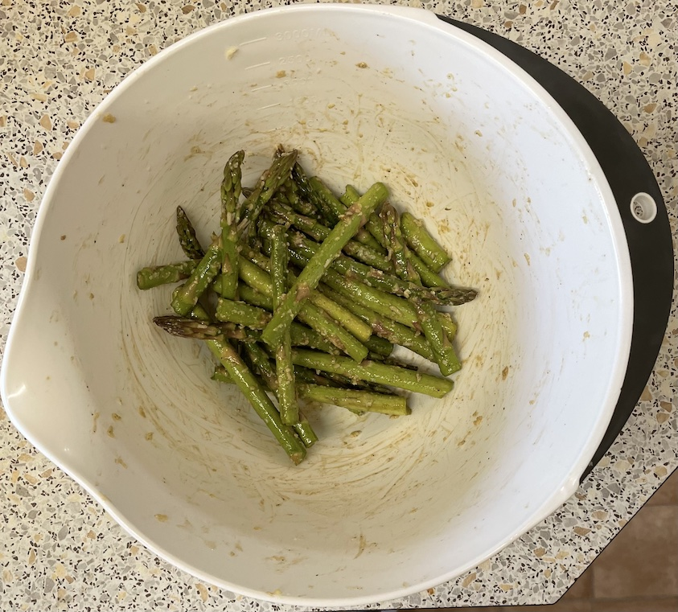
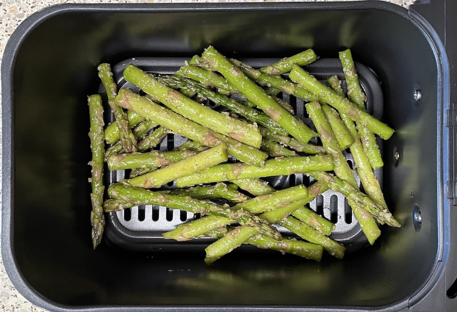

Vegetables
Asparagus
Roasting
- Mix bunch with
- olive oil
- lemon juice / balsamic vinegar
- ground black pepper
- grated parmesan / cheddar
- Roast in air fryer at 190°C for 8 mins


Aubergine
- 450g for large aubergine
- slice baby aubergines
Roasting
- Zebra peel, because skin gets tough when roasted
- Cut into cubes and toss in olive oil
- Roast in oven at 180°C for 25 mins
Pan fry
- Heat oil
- 3 mins each side, adding more oil as required
Broccoli / sprouting broccoli
- 10 mins in steamer
- 6 mins in boiling water (try after 6 mins)
Cabbage

Carrots
- Roasted baby carrots: parboil for 5 mins then roast in oven at 180°C for 30 mins
Fennel
Roasting
- Coat slices in olive oil, balsamic vinegar and seasoning
- Roast in oven at 180°C for 30 mins
Fine beans
Mushrooms
- 250g = 15 medium mushrooms
- ~17g per mushroom
Peas
Peppers
Roasting
- Cut in half and place skin side down
- Roast in oven at 200°C for 25 mins until skins are black (air fryer)
- Flip after 10 mins
- Leave to cool for 10 mins then remove skins
Sweetcorn
- 15 mins at 180°C in air fryer (try less)
- 6 mins in boiling water